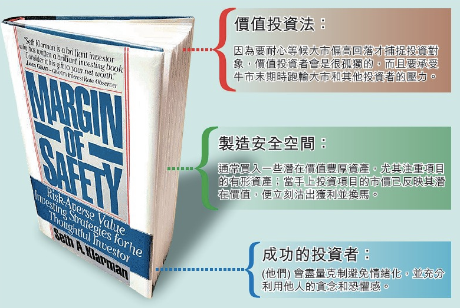

價值投資這種設定

【一旦接受了價值投資這種設定】 大家好，很抱歉，因為小弟自從回到嘉義來，已經發生太多事，也太過於專注在一些私人事件上，所以就一直沒有抽空來貼文，希望見諒，最近又安排了十月去日本，正在努力的學習日文當中，希望能在日本全程使用日文度過。
正題開始
一段時間過去，就會開始有很多新學價值投資的人，或多或少會出現重複問題，這樣其實是好事，對於一個推廣價值投資的團體或個人而言，應該要更歡欣於學習價值投資的人越來越多，不過我想要在此次講的是，當你接受了價值投資的設定之後，你會發生什麼事，以致於你 1.無法堅持實行 2.即使實行了，仍然充滿懷疑。 首先你要知道，當你踏進了這個領域，你會變得孤獨。因為你必須花時間學習；正因為如此，你必須抽空出來學一些你可能壓根都沒聽過的名詞再到一些評估方式，或稱為｛評估模型｝，在你抽空出來學習時，你必須壓縮你跟其它人互動的時間，有的人會說：[你可以做好學習的動作又保持跟人交流]，請面對事實，你一天只有24小時，你要做好學習的動作又保持跟人交流，那你要拿什麼來換一天25個小時?這是一個事實。另一個事實是，當你沒有先學習到某一個程度或狀態時，你為什麼會覺得有人會願意跟你花很多時間交流？（最後只變成教你...），所以你要不要先學習？要！需不需要時間？要！你的一天會變成24小時嗎？不會。 然後你透過學習，你學會了一些評估技巧，接下來遇到的問題肯定就是錢，如果你已經賺了、存了一些錢，你開始會發現，你又會面臨怎麼挑選標的、持有幾個標的比較好...這個問題，你會開始接觸一些什麼irr或期望報酬率的公式，然後你又會開始聽到很多人在烙一些英文、希臘文字，其實沒有很難，但是卻把它講的很難的Beta值之類。其實這些都無關緊要，我現在要講的是我在這條路上，實際的體驗，然後我覺得應該要讓一些沒有期待或有所期待的人，好好的思考一下，這是一條怎樣的道路。 我不會說價值投資不碰運氣，但是運氣在一個大型組合中會顯得小，也就是說，當你買了一籃子股票的時候，你的運氣成份會變小，會比較趨近大盤指數，當然，任何事都會有例外，我不討論例外，我也不喜歡拿例外狀況來說嘴。價值投資的門派也分成很多，我要說的是一個所有價值投資都必須用到的一個概念，這個概念，巴菲特或是羅伯特清崎也有講過。就是投資。投資是你現在投進去的錢，期望在這個標的之下，經過若干時間取回時，會增加。
這裡面有三個重點
A. 你必須現在投錢進去。
B. 必須經過一些時間再取回。
C. 錢要增加。
這聽起來似乎像廢話一般，其實它不是廢話。其實它透露了價值投資該做的事情。 假設你今天買了三個不同標的，三個標的都擁有距離合理價格70%的安全邊際，然而，這三個標的在起初的一個月仍然一直下跌，半年後才又回到買入價，其中兩個標的在一年後賺了10%，但第三個標的是負的20%，你又整理了這三個標的的狀況，發現一個賺錢的標的已經因為營運不好而沒有安全邊際了，你賣了它，這一檔你賺了10%，另一個賺錢的標的，營運狀況及競爭優勢不變，仍然還存有60%的安全邊際，可是你等了一年，這一檔在這一年來，始終最多就是10%漲幅，現在不賣，你就沒有10%回收，但是它還掛著安全邊際60%的預期報酬在那邊，你要繼續持有嗎？你如果再多等一年會不會往下滑？最後你決定，你要把這60%的安全邊際賺下來，你等待，你決定不管經過幾年都不賣它，只要它還存在60%的安全邊際，你決定未來再實現這筆獲利。然後你開始面對第三檔，這個賠錢貨的營運狀況，不管數據還是經營團隊的績效都十分高效，但是你不知道為什麼這股價不漲反跌，而且你已經等了一年了，這一年來，因為它的股價降低又配上它的營運狀況上揚，預期獲利已經來到400%，可是昨天還跌停板！你決定出脫這個賠錢貨，因為你覺得有些書說的對，留下賺錢的，去掉賠錢的。結果最後你才發現你跟價值投資背道而馳，因為你在這上面應該加碼，而不是減碼。然後你發現，其實混進了時間考量的，很難去實現價值投資。 我認為，價值投資的買賣精髓在於，買的時候，要有足夠的安全邊際，並且不考慮要持有多少時間，而是你要持有到價值價格相符處，我不認為股利股息的考量對大部份人來說很重要(除非你的本金很大，你靠的就是用幾千萬換幾百萬股利在過生活的人)，股價的漲跌隨便一個波動就比你的殖利率高或低很多，尤其是你抓了100%的安全邊際的標的，你不會怎麼需要5%的殖利率。當然有還是最好，我是說，不需要看得很重。如果你運氣背一點，你就會需要那5%殖利率，運氣背到你買的標的本益比8，持續下降，而下降的原因是股價下降，而非EPS上升。
但是我們要消除運氣的影響，價值投資的賺錢方式就是一種消除運氣的方式。你可能會評估出三個預期報酬70%的標的，你的方法只要兩個，就是評估跟等待，你定期去評估，然後一直等待，你的心態只能有一個 ＂不管時間，誰先到達合理價，我就賣誰＂ 你只有賺錢的時候才會賣股票。
所以理論上，即使是同一支股票，你永遠也不會賣到賠錢的股票，因為買貴的，你就讓它套在那邊，直到賺錢，價格越往下的，你也買了，這些低價位的，賺錢機率高出高價位的會多很多。
可是你又不知道它會不會賺錢。對！這就是先期評估重要的原因。在你出手之前，你必須用很多精神去評估它，你必須確定這是一門好生意，你不要把安全邊際20%當成一門好生意，你該看的是100%、200%或400%的安全邊際，然後你訂下的期限是無限，你只是心態這麼看，事實上根本不會真的有那種企業可以讓你值得持有一輩子(我是說台股)，你也很難評估它到底是不是值得一輩子擁有；噢！或許你會覺得{可口可樂}不就是很好的例子嗎？我可能就會問你：那你的可口可樂咧？你買多少、多久了？。 價值投資的賺錢方法就是這麼簡單，你評估一些標的，嘗試著在這些標的之間等待某一檔到達預期報酬或是某一檔的你買的某低價位上升，然後賣掉獲利，在這之前，全都只剩等待及定期評估。除非狀況真的很糟到你覺得只能認賠，否則都不要賣掉，然後持續的分配在這幾個標的中，往下加碼(當然，營運狀況不能下滑)，所以你要分散，又要往下加碼攤平，這會造成你需要夠多的本金(其實你可以買零股你知道嗎?)，一般人不會有很多資金做這些事，所以持有三～五檔才是比較合理的，如果你本金放大，你的標的數量也應該跟著放大；舉例來說，即使有一家公司倒閉，你的其它兩個標的因為都有200%的預期獲利，而你也等到那個時候了，其實你賠掉的那一家也不算什麼(所以大部份的建議都叫你不要用閒錢以外的錢投資，也不要去借)，這樣，你的運氣影響就會降低。
而根據一般經驗的狀況來講，你不要追逐熱門股比較不會因為公司很快的大起大落，造成你的分析失準而導致你的所有等待都是賠錢。你要去掌握好預測的，會賺”多快”，那才是你的運氣在百分之百掌握的，你應該讓你這部份的運氣自己去跑。
就像巴菲特買了美國航空，最後獲得了＂令他滿意＂的報酬，但這中間其實股價曾經下滑了90%，可是他仍然等到賺錢的那一天。
巴菲特的傳奇是因為他有一家控股公司，搭配了很高的長期報酬率，他的所有操作都是＂除非很糟到認賠才行，否則還沒賺錢的不賣，直到它噴出使得價值跟價格相匹配＂。 其實，台股也可以這麼做，我舉個例子，黑松有很長一段時間，整個就是低迷食品股的低迷股，然而它也有翻身的機會，再翻翻裕隆，當大家都覺得汽車股到盡頭了，裕隆還是可以有爽賺幾年的機會，老實說，依我所看過的，上市櫃的公司，大部份都會有一次或兩次翻身的機會，你很少會買到一家低迷很久但是都沒倒的傳產公司真的倒掉，大部份會倒的都是熱門股公司，然後這些傳產公司就在某一天突然噴出，其實你也都是在等待這一段噴出的機會，你把你所有的持股都看成有這麼一個噴出的機會，然後不噴出你就不賣，當你賣的時候，就是獲利非常的時候，然後你再把獲利的錢拿去買下另一個等待，沒有噴出的時候就是等待。 所以你看那些價值投資的大師，明明年化投資報酬率都是20%左右，可是都會聽到他們在某些股票賺了幾倍，他們就是利用這些幾倍的平衡那些還沒賺錢的標的，如果他們的股票是同時噴出的，年化報酬哪會只有20%左右?那是因為等待時間所拉下來的。
所以巴菲特才會說，你需要的是耐心。
今天，你知道了，巴菲特為什麼大多會買傳產，因為傳產不會倒(客觀條件下)，不會倒的企業就有噴出的機會，你的研究就是要找到客觀條件下，不會倒的企業(下檔風險低)，然後買下等待，即使你的財務分析學的不是很好，大部份還是能有不錯的報酬，所以你的安全邊際要抓大一點，野心要大一點，否則你看錯的那些損失也是很難賺回來的。
價值投資的賺錢方法就是這樣，你必須學會評估一家企業會不會倒閉，然後學會適當的分散標的（不是分散風險）及價位，記得，是標的及價位。然後你想要提升一點勝率，那麼就去學會評估一家企業會不會營運轉好，然後再去學會評估各種外在條件的影響，或是機率問題，幫你做更多判斷。但是你要實行價值投資，其實就是只要先學會等待，你就學會很多了。